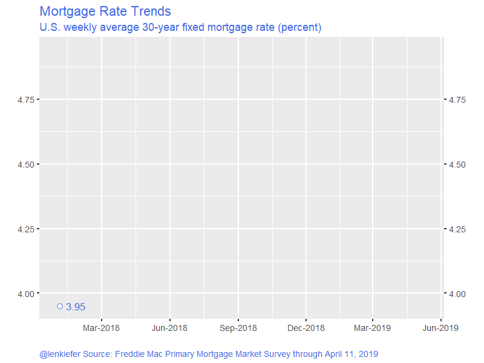

The current economic expansion is set to enter it’s tenth year this summer. Assuming we make it to June, this will become the longest U.S. economic expansion in recorded history stretching back to the 19th century. But how is the housing market doing? After a decade of recovery housing market activity still has room for improvement, but trends in 2018 were negative. Home sales, housing construction and house price growth all declined in 2018. Is the housing market recovery over? Or will we bounce back in 2019?
Earlier this year, see mortgage rates and housing construction, I discussed how higher mortgage interest rates may have been behind the decline in housing market activity. Fortunately, mortgage interest rates are on the way back down:

Will that decline in rates be enough to boost the housing market, or has the housing market permanently lost steam?
Decomposing fluctuations
To help answer this question we can apply a technique described in a new working paper:
- Matthes, C., Lubik, T. A., & Verona, F. (2019). ‘Assessing US Aggregate Fluctuations Across Time and Frequencies’ Richmond Fed Working Paper (No. 19-6). LINK to Working Paper
This technique was described at a high level in this brief pdf LINK.
The authors present a novel application of a decomposition technique called wavelets to analyze fluctuations in economic indicators. By applying the wavelets to macroeconomic data they can decompose the time series between fluctuations at different frequencies.
A bit more formally (check the paper for details, the following are equations 1-3) a time series \(X_t\) can be decomposed into a scale component \(S_{j,t}\) and \(J\) detail components \(D_{j,t}\):
\(\begin{align} X_t = \sum^J_{j=1}D_{j,t}+ S_{j,t}, \end{align} (1)\)
with:
\(\begin{align} D_{j,t} = \frac{1}{2^J} \big( \sum^{2^{j-1}-1}_{i=0} X_{t-i} - \sum^{2^{j-1}-1}_{i=2^{j-1}} X_{t-i} \big),\end{align} (2)\)
\(\begin{align} S_{j,t} = \frac{1}{2^J} \sum^{2^{j-1}-1}_{i=0} X_{t-i}. \end{align} (3)\)
Wavelets are not new but have recently seen more widespread use in finance and economics. There are of course R packages for them.
As is our wont, we can apply these techniques to housing data and using R.
An application to housing data
For our exercise here we’ll replicate some of the results in Matthes, Lubik and Verona (2019) for macroeconomic variables (to be sure we’re on the right track) and then apply those techniques to housing variables. We’ll learn some interesting things. Buckle up.
Get data
We’re going to use standard economic data for the U.S. so we can conveniently get them via the St Louis Fed’s FRED. To replicate Matthes, Lubik and Verona (2019) we’ll grab several macro variables including the Unemployment Rate, the Federal Funds Rate and Treasury yields. Then to address the question about housing we’ll look at several housing market variables.
Click for R code to wrangle data
First load required packages.
library(tidyverse)
library(lubridate)
library(wavelets)
library(forecast)
library(tidyquant)
library(data.table)
library(knitr)
library(kableExtra)
# not needed but could be useful
#library(wmtsa)Our data will come in three flavors. First we’ll create a small dataframe of NBER business cycle dates by hand, then we’ll grab some monthly time series and finally we’ll grab some quarterly time series. The wavelets are a bit more intuitive at quarterly frequency, so we’ll create quarterly averages of the monthly data. Note that this will create some slight differences between our results and Matthes, Lubik and Verona (2019) because they aggregated daily data into quarterly data for the interest rate series. Subsequent data revisions and different time periods should explain most of the other (very small) differences in what we’re about to produce.
Data pulled on April 11, 2019
# recession data ----
recessions.df = read.table(textConnection(
"Peak, Trough
1948-11-01, 1949-10-01
1953-07-01, 1954-05-01
1957-08-01, 1958-04-01
1960-04-01, 1961-02-01
1969-12-01, 1970-11-01
1973-11-01, 1975-03-01
1980-01-01, 1980-07-01
1981-07-01, 1982-11-01
1990-07-01, 1991-03-01
2001-03-01, 2001-11-01
2007-12-01, 2009-06-01"), sep=',',
colClasses=c('Date', 'Date'), header=TRUE)%>%
# these dates at numbers will be helpful with ts() plots laters
mutate(Peakt = year(Peak)+(month(Peak)-1)/12,
Trought = year(Trough)+(month(Trough)-1)/12)
# fred data ----
# monthly data----
# FRED tickers
tickers=c("UNRATE","FEDFUNDS","GS10",
"HSN1F","MSACSR",
"HOUST","HOUST1F",
"HOUST5F", "TTLHHM156N")
# Human readable descriptions
lookup_1 <- c("Unemployment Rate (%)",
"Federal Funds Effective Rate (%)",
"10-Year Treasury Constant Maturity Rate (%)",
"New One Family Houses Sold (1000s SAAR)",
"Monthly Supply of New Houses for Sale (Months)",
"Housing Starts (total, 1000s SAAR)",
"Housing Starts (1-unit structures, 1000s SAAR)",
"Housing Starts: (5-Unit Structures or More, 1000s SAAR)",
"Household Estimates (Thousands)"
)
dfm <- tidyquant::tq_get(tickers,get="economic.data",from="1954-01-01")
# convert monthly data to quarter data
dfq <-
dfm %>% mutate(year=year(date), quarter=(month(date)-1) %/% 3 + 1) %>%
group_by(symbol,year,quarter) %>%
summarize(vq=mean(price),
date=first(date)) %>%
ungroup()
# spread it out (wide is more convenient than tidy below)
dfq2 <- dfq %>% select(symbol,vq,date) %>% group_by(date) %>% spread(symbol,vq)
# quarterly data ----
# FRED tickers
tickers2 <- c("RRVRUSQ156N",
"RHVRUSQ156N",
"USSTHPI",
"PRFI",
"A011RL1Q225SBEA",
"A011RY2Q224SBEA"
)
# Human readable descriptions
lookup_2 <- c(
"Rental Vacancy Rate for the United States (%)",
"Homeowner Vacancy Rate for the United States (%) ",
"FHFA All-Transactions House Price Index for the United States (Index 1980 Q1 = 100)",
"Nominal private residential fixed investment ($ Billions, SAAR)",
"Percent change in real private residential fixed investment (%)",
"Contribution to GDP growth real private residential fixed investment (%)")
# lookup table (tickers and series_name)
df_lookup=data.frame(series=c(tickers,tickers2), series_name=c(lookup_1,lookup_2), stringsAsFactors = FALSE)
# quarterly
# spread it out (wide is more convenient than tidy below)
dfq3<- tidyquant::tq_get(tickers2,get="economic.data",from="1947-01-01") %>% group_by(date) %>% spread(symbol,price)
dfq4 <- merge(dfq2, dfq3, all="TRUE", by="date") %>% mutate(tt=year(date)+ (month(date)-1)/12) %>% ungroup()
# create quarerly growth in households, house prices
dfq4 <- mutate(dfq4,
HPA= log(USSTHPI)-lag(log(USSTHPI)),
HHG = log(TTLHHM156N)- lag(log(TTLHHM156N))
)
# adjust lookup for new transformed variables
df_lookup = rbind(df_lookup, data.frame(series=c("HPA","HHG"),
series_name=c("Quarterly House Price Growth (%)","Quarterly Household Growth (%)"),
stringsAsFactors = FALSE))Now that we have our data, let’s first take a look. I’ve been doing a lot of time series stuff lately, so I’m going to take advantage of the forecast package autoplot function that lets you plot time series objects with less code. We’ll also use some bang bang (!!) with a function to pass variable names to a function. It will be useful later on.
We have to do a little trick to get the recession shading behind the lines if we use autoplot. See code.
Code for plotting ts()
f_ts <- function(invar="GS10"){
invar <- enquo(invar)
df <- select(dfq4, tt,!!invar)
df <- df[complete.cases(df),]
yts <- ts(df[,2], start=min(df$tt), frequency=4)
}
g <-
autoplot(f_ts("HOUST"))+
labs(x="date (quarterly)",y="", title="U.S. Housing Starts (1000s, SAAR)",
caption="@lenkiefer Source: U.S. Census Bureau and U.S. Department of Housing and Urban Development, Housing Starts: Total: New Privately Owned Housing Units Started [HOUST],\nretrieved from FRED, Federal Reserve Bank of St. Louis; https://fred.stlouisfed.org/series/HOUST, April 11, 2019.") +
theme(plot.caption=element_text(hjust=0))
# add recession shading
gbox <-
geom_rect(data=filter(recessions.df,Peakt>1954), inherit.aes=F,
aes(xmin=Peakt, xmax=Trought, ymin=-Inf, ymax=+Inf), fill='darkgray', alpha=0.5)
# we want to move the box in front of the autoplot, so we ce rearrange like so
# see: https://stackoverflow.com/questions/20249653/insert-layer-underneath-existing-layers-in-ggplot2-object
g$layers <- c(gbox, g$layers)So here’s housing starts:
g
Figure 1: Housing Starts Time Series
Following Matthes, Lubik and Verona (2019) we want to decompose this time series into fluctuations at different frequencies. If we could do that we could see how much business cycle fluctuations contribute to the overall fluctuations in the time series.
Fortunately, we can use the wavelets package to estimate the coefficients in equations 1-3 above.
Code for plotting ts()
We’ll create a function that selects a column of our data and analyzes using wavelets, outputting the decomposed series along with a variance decomposition.
There are many options for the wavelets, but following Matthes, Lubik and Verona (2019) we will use the Haar wavelet filter with 6 levels. That will break the variation up between 2-4 quarters, 4-8 quarters, 8-16 quarters, 16-32 quarters, 32-64 quarters, 64-128 quarters and the long-term trend. We will call the first 2 groups “Short Term” the next two “Business Cycle”,and the next 2 “Medium Term”.
# function to analyze wavelets
myf <- function(invar){
invar <- enquo(invar)
df <- select(dfq4, tt,!!invar)
df <- df[complete.cases(df),]
yts <- ts(df[,2], start=min(df$tt), frequency=4)
w2 <- modwt(yts, filter="haar", n.levels=6, boundary="periodic", fast=TRUE)
Wdf <- data.frame(w2@W)
var_decomp <- c(round(100*colSums(Wdf**2)/(nrow(Wdf)-1)/ var(yts),1),
long_term=round(100*(1-sum(colSums(Wdf**2)/(nrow(Wdf)-1)/ var(yts))),1))
Sj <- yts-rowSums(Wdf)
tWdf <- ts(Wdf, start=min(df$tt), frequency=4)
D12 <- ts(rowSums(Wdf[,1:2]), start=min(df$tt), frequency=4)
D34 <- ts(rowSums(Wdf[,3:4]), start=min(df$tt), frequency=4)
D56 <- ts(rowSums(Wdf[,5:6]), start=min(df$tt), frequency=4)
return(list(vd=var_decomp,out_ts=ts.union(D12,D34,D56,Sj),mod=w2))
}
# function to plot retults
my_plotf <- function(invar="A011RL1Q225SBEA"){
plot_subtitle <- df_lookup[df_lookup$series==invar,"series_name"]
invar <- enquo(invar)
out <- myf(!!invar)
ss<- min(time(f_ts(!!invar)))+ 2
plot_ts2 <- window(f_ts(!!invar), start=ss)
plot_ts <- window(out$out_ts, start=ss)
plot_df <- data.frame(tt=time(plot_ts), plot_ts) %>%
gather(series,val,-tt) %>%
# labels for series
mutate( series_id = case_when(series=="D12" ~ "a) Short Term: 2-8 Quarters",
series=="D34" ~ "b) Business cycle: 16-32 Quarters",
series=="D56" ~ "c) Medium Term: 64-128 Quarters",
T ~ "d) Long Term: >128 Quarters"
))
plot_df2 <- data.frame(tt=time(plot_ts2), plot_ts2)
ggplot(data=plot_df, aes(x=tt, y=val))+
facet_wrap(~series_id, ncol=1, scales="free_y")+
geom_hline(aes(yintercept=ifelse(series=="Sj",NA,0)), linetype=2)+
geom_rect(data=filter(recessions.df,Peakt>ss-1), inherit.aes=F,
aes(xmin=Peakt, xmax=Trought, ymin=-Inf, ymax=+Inf), fill='darkgray', alpha=0.5) +
geom_line(size=1.05)+
scale_y_continuous(sec.axis=dup_axis())+
labs(subtitle=plot_subtitle,
title="Wavelet Decomposition",
x="date",
y="Variation due to fluctuations at frequency:",
caption="@lenkiefer Based on decomposition described in Matthes, C., Lubik, T. A., & Verona, F. (2019). \n'Assessing US Aggregate Fluctuations Across Time and Frequencies' Richmond Fed Working Paper (No. 19-6).\nData retrieved from FRED, Federal Reserve Bank of St. Louis; https://fred.stlouisfed.org/\nGray bars NBER Recessions")+
theme(plot.caption=element_text(hjust=0))
}Apply the function defined above to housing starts:
my_plotf("HOUST")
Figure 2: Variance decomposition of housing starts
Discussion
The plot above is quite interesting. It breaks down the variation in the housing starts time series across various frequencies. The bottom panel shows very low frequency (>128 quarter or over 32 years) movements in housing starts. From the 1960 through the 1980s, housing starts were gradually trending higher until they hit over 1.6 million units per year. By the early 2000s the trend was a bit lower, rising until 2007, but then collapsing in the Great Recession. There has been no recovery.
The medium term (64 to 128 quarters or 8 -32 years ) has been showing a lot of movement. The medium term trend was generally moving down until the late 1990s, when it reversed and picked up. We can see that it has been recovering since 2009, but has only very recently gotten back to zero as housing construction grinds higher.
The business cycle frequency (16-32 quarters or 4-8 years) component closely mimics the national business cycle as you can see it turn negative before most U.S. recession (gray bars). This cyclical component had been positive, but has been trending lower. This trend took place well before mortgage rates increased in 2018 and reflects a gradual slowdown in the rate of increase. Most recently it has been about zero.
The short term component is highly noisy reflecting noise in the estimates and other very short-term economic shocks.
The slowdown at business cycle frequencies is somewhat alarming. However, the business cycle trend has not turned negative yet and like the 1990s, we may experience a modest slowdown and re-acceleration if interest rates remain low and the labor market keeps creating jobs.
Variance decomposition
A useful calculation is the variance decomposition. This attributes the total variation in the time series to various frequencies.
Let’s run it for housing starts. This calculation is the same as in Matthes, Lubik and Verona (2019) Table 1 as we will confirm below.
invar1 <- "HOUST"
v1 <- data.frame(t(myf(invar1)$vd))
rownames(v1)<- df_lookup[df_lookup$series==invar1,"series_name"]
colnames(v1) <- c("D1: 2-4Q", "D2: 4-8Q","D3: 8-16Q","D4: 16-31Q","D5: 32-64Q","D6: 64-128Q", "S6: >128Q")
kable(v1,
font_size = 8,
row.names=TRUE,
caption=" Variance Decomposition for U.S. Housing Starts (quarterly)") %>%
add_header_above(c(" " = 1, "Short Term" = 2, "Business Cycle" = 2, "Medium Term" = 2, "Long Term" =1 )) | D1: 2-4Q | D2: 4-8Q | D3: 8-16Q | D4: 16-31Q | D5: 32-64Q | D6: 64-128Q | S6: >128Q | |
|---|---|---|---|---|---|---|---|
| Housing Starts (total, 1000s SAAR) | 2.3 | 4.5 | 10.2 | 20.5 | 23.7 | 21.1 | 17.7 |
For housing starts, a significant portion of the variation is due to Medium Term and Long Term trends. The Long Term trend accounts for a 17.7 percent of the total variation, while the Medium Term trend accounts for another 45 percent. Business cycle frequencies account for around 30 percent of the variation in housing starts.
This result isn’t too surprising because population growth and household formation are key drivers of housing construction. With the U.S. population growth rate slowing, the longer term needs for new housing construction have been declining.
House price decomposition
It is interesting to decompose house prices. Because we know that house prices trend higher with inflation, it might be more interesting to look at the quarterly change (in natural logarithms).
my_plotf("HPA")
Figure 3: Variance decomposition of house price index
invar1 <- "HPA"
v1 <- data.frame(t(myf(invar1)$vd))
rownames(v1)<- df_lookup[df_lookup$series==invar1,"series_name"]
colnames(v1) <- c("D1: 2-4Q", "D2: 4-8Q","D3: 8-16Q","D4: 16-31Q","D5: 32-64Q","D6: 64-128Q", "S6: >128Q")
kable(v1,
font_size = 8,
row.names=TRUE,
caption=" Variance Decomposition for House Price Growth (Quarterly Percent Change)") %>%
add_header_above(c(" " = 1, "Short Term" = 2, "Business Cycle" = 2, "Medium Term" = 2, "Long Term" =1 )) | D1: 2-4Q | D2: 4-8Q | D3: 8-16Q | D4: 16-31Q | D5: 32-64Q | D6: 64-128Q | S6: >128Q | |
|---|---|---|---|---|---|---|---|
| Quarterly House Price Growth (%) | 16.9 | 12.2 | 6.8 | 14.2 | 22.5 | 20.1 | 7.4 |
Like with housing starts, we see an interesting pattern in the house price growth decomposition. For house prices, only about 7 percent of the variation is due to the long term trend. And additional 42 percent is due to the medium term trend. Because this house price index is only available since 1975 our ability to distinguish between a trend of 32 years and a longer-term trend is probably limited. I’m pretty sure others have explored how wavelets can distinguish such trends, but it might be interesting to probe more in the context of economic/housing data. (filed for possible future to do).
Even if about half of the variation is due to longer term trends about half of the variation is due to shorter-term trends. The 29 percent that is due to short-term fluctuations is probably a mix of noise in the estimates (would be interesting to compare against other indices) and short-term economic trends.
About 21 percent of the variation in house price growth is due to fluctuations at the business cycle frequency. A significant amount of that is due to one cycle: the Great Recession. However, there is also a rather large fluctuation around the recessions in the early 1980s. Because inflation was so volatile in this period, it might be interesting to look at real (inflation-adjusted) house price growth during this period. (filed for possible future to do)
Variance decomposition for all variables
Let’s look at the variance decomposition for all the variables we downloaded.
Code for plotting ts()
myf2 <- function(invar1="HOUST"){
invar2 <- enquo(invar1)
v1 <- data.frame(t(myf(!!invar2)$vd))
return(v1)
}
# custom labels for table
df_table <- df_lookup %>% mutate(v=map(series,myf2)) %>% unnest(v) %>% select(-series)
colnames(df_table) <- c("Series","D1: 2-4Q", "D2: 4-8Q","D3: 8-16Q","D4: 16-31Q","D5 32-64Q","D6: 64-128Q", "S6: >128Q")
# reorganize table
df_table$id <- c(1,1,1, 2,2,3,3,3,4,5,5,6,2,2,2,6,4)
df_table <- arrange(df_table,id)
df_table$id <- NULLUsing kableExtra we can make a nicely formatted table:
Big table
kable(df_table,
font_size = 8,
row.names=FALSE,
caption=" Variance Decomposition for U.S. Macroeconomic and Housing Market Indicators (quarterly data)") %>%
kable_styling("striped") %>%
add_header_above(c(" " = 1, "Short Term" = 2, "Business Cycle" = 2, "Medium Term" = 2, "Long Term" =1 ))%>%
pack_rows(index = c( "Macro Variables " = 3,
"New Home Sales" = 2,
"Housing Investment"= 3,
"Housing Construction"=3,
"Households"=2,
"Vacancy Rates"=2,
"House Prices" = 2)) %>%
footnote(general="@lenkiefer Based on decomposition described in Matthes, C., Lubik, T. A., & Verona, F. (2019). \n'Assessing US Aggregate Fluctuations Across Time and Frequencies' Richmond Fed Working Paper (No. 19-6).\nData retrieved from FRED, Federal Reserve Bank of St. Louis; https://fred.stlouisfed.org/\nSeries length varies by series, maximum available quarters selected",
number="Data Retrieved on April 11, 2019") | Series | D1: 2-4Q | D2: 4-8Q | D3: 8-16Q | D4: 16-31Q | D5 32-64Q | D6: 64-128Q | S6: >128Q |
|---|---|---|---|---|---|---|---|
| Macro Variables | |||||||
| Unemployment Rate (%) | 1.3 | 3.9 | 9.5 | 18.0 | 25.0 | 23.3 | 19.0 |
| Federal Funds Effective Rate (%) | 1.5 | 2.8 | 5.6 | 10.0 | 10.6 | 13.2 | 56.3 |
| 10-Year Treasury Constant Maturity Rate (%) | 0.6 | 1.2 | 2.4 | 3.9 | 7.3 | 15.2 | 69.3 |
| New Home Sales | |||||||
| New One Family Houses Sold (1000s SAAR) | 1.5 | 2.4 | 5.7 | 14.1 | 24.6 | 26.5 | 25.2 |
| Monthly Supply of New Houses for Sale (Months) | 3.4 | 6.2 | 11.9 | 21.3 | 25.6 | 19.6 | 12.1 |
| Housing Investment | |||||||
| Nominal private residential fixed investment ($ Billions, SAAR) | 1.0 | 1.6 | 3.2 | 6.8 | 12.0 | 14.3 | 61.2 |
| Percent change in real private residential fixed investment (%) | 24.1 | 24.3 | 25.9 | 14.5 | 7.2 | 2.6 | 1.3 |
| Contribution to GDP growth real private residential fixed investment (%) | 22.9 | 24.4 | 26.8 | 15.0 | 7.3 | 2.6 | 1.1 |
| Housing Construction | |||||||
| Housing Starts (total, 1000s SAAR) | 2.3 | 4.5 | 10.2 | 20.5 | 23.7 | 21.1 | 17.7 |
| Housing Starts (1-unit structures, 1000s SAAR) | 2.1 | 3.8 | 8.4 | 17.6 | 24.9 | 25.2 | 18.0 |
| Housing Starts: (5-Unit Structures or More, 1000s SAAR) | 2.1 | 3.8 | 9.2 | 18.7 | 21.3 | 15.7 | 29.2 |
| Households | |||||||
| Household Estimates (Thousands) | 1.1 | 1.6 | 2.9 | 5.6 | 10.6 | 19.7 | 58.4 |
| Quarterly Household Growth (%) | 54.7 | 22.6 | 6.7 | 3.3 | 2.1 | 2.1 | 8.6 |
| Vacancy Rates | |||||||
| Rental Vacancy Rate for the United States (%) | 1.1 | 1.2 | 2.3 | 6.1 | 13.4 | 22.6 | 53.2 |
| Homeowner Vacancy Rate for the United States (%) | 1.6 | 2.0 | 3.1 | 7.0 | 14.9 | 24.5 | 46.8 |
| House Prices | |||||||
| FHFA All-Transactions House Price Index for the United States (Index 1980 Q1 = 100) | 1.8 | 2.7 | 4.9 | 9.1 | 15.2 | 23.4 | 42.7 |
| Quarterly House Price Growth (%) | 16.9 | 12.2 | 6.8 | 14.2 | 22.5 | 20.1 | 7.4 |
| Note: | |||||||
|
@lenkiefer Based on decomposition described in Matthes, C., Lubik, T. A., & Verona, F. (2019). ‘Assessing US Aggregate Fluctuations Across Time and Frequencies’ Richmond Fed Working Paper (No. 19-6). Data retrieved from FRED, Federal Reserve Bank of St. Louis; https://fred.stlouisfed.org/ Series length varies by series, maximum available quarters selected |
|||||||
| 1 Data Retrieved on April 11, 2019 | |||||||
If we want it more compact we can make it scroll-able.
kable(df_table,
font_size = 8,
row.names=FALSE,
caption=" Variance Decomposition for US Macroeconomic and Housing Market Indicators (quarterly data)") %>%
kable_styling("striped") %>%
add_header_above(c(" " = 1, "Short Term" = 2, "Business Cycle" = 2, "Medium Term" = 2, "Long Term" =1 ))%>%
pack_rows(index = c( "Macro Variables " = 3,
"New Home Sales" = 2,
"Housing Investment"= 3,
"Housing Construction"=3,
"Households"=2,
"Vacancy Rates"=2,
"House Prices" = 2)) %>%
footnote(general="@lenkiefer Based on decomposition described in Matthes, C., Lubik, T. A., & Verona, F. (2019). \n'Assessing US Aggregate Fluctuations Across Time and Frequencies' Richmond Fed Working Paper (No. 19-6).\nData retrieved from FRED, Federal Reserve Bank of St. Louis; https://fred.stlouisfed.org/\nSeries length varies by series, maximum available quarters selected",
number="Data Retrieved on April 11, 2019") %>%
scroll_box(width = "100%", height = "450px")| Series | D1: 2-4Q | D2: 4-8Q | D3: 8-16Q | D4: 16-31Q | D5 32-64Q | D6: 64-128Q | S6: >128Q |
|---|---|---|---|---|---|---|---|
| Macro Variables | |||||||
| Unemployment Rate (%) | 1.3 | 3.9 | 9.5 | 18.0 | 25.0 | 23.3 | 19.0 |
| Federal Funds Effective Rate (%) | 1.5 | 2.8 | 5.6 | 10.0 | 10.6 | 13.2 | 56.3 |
| 10-Year Treasury Constant Maturity Rate (%) | 0.6 | 1.2 | 2.4 | 3.9 | 7.3 | 15.2 | 69.3 |
| New Home Sales | |||||||
| New One Family Houses Sold (1000s SAAR) | 1.5 | 2.4 | 5.7 | 14.1 | 24.6 | 26.5 | 25.2 |
| Monthly Supply of New Houses for Sale (Months) | 3.4 | 6.2 | 11.9 | 21.3 | 25.6 | 19.6 | 12.1 |
| Housing Investment | |||||||
| Nominal private residential fixed investment ($ Billions, SAAR) | 1.0 | 1.6 | 3.2 | 6.8 | 12.0 | 14.3 | 61.2 |
| Percent change in real private residential fixed investment (%) | 24.1 | 24.3 | 25.9 | 14.5 | 7.2 | 2.6 | 1.3 |
| Contribution to GDP growth real private residential fixed investment (%) | 22.9 | 24.4 | 26.8 | 15.0 | 7.3 | 2.6 | 1.1 |
| Housing Construction | |||||||
| Housing Starts (total, 1000s SAAR) | 2.3 | 4.5 | 10.2 | 20.5 | 23.7 | 21.1 | 17.7 |
| Housing Starts (1-unit structures, 1000s SAAR) | 2.1 | 3.8 | 8.4 | 17.6 | 24.9 | 25.2 | 18.0 |
| Housing Starts: (5-Unit Structures or More, 1000s SAAR) | 2.1 | 3.8 | 9.2 | 18.7 | 21.3 | 15.7 | 29.2 |
| Households | |||||||
| Household Estimates (Thousands) | 1.1 | 1.6 | 2.9 | 5.6 | 10.6 | 19.7 | 58.4 |
| Quarterly Household Growth (%) | 54.7 | 22.6 | 6.7 | 3.3 | 2.1 | 2.1 | 8.6 |
| Vacancy Rates | |||||||
| Rental Vacancy Rate for the United States (%) | 1.1 | 1.2 | 2.3 | 6.1 | 13.4 | 22.6 | 53.2 |
| Homeowner Vacancy Rate for the United States (%) | 1.6 | 2.0 | 3.1 | 7.0 | 14.9 | 24.5 | 46.8 |
| House Prices | |||||||
| FHFA All-Transactions House Price Index for the United States (Index 1980 Q1 = 100) | 1.8 | 2.7 | 4.9 | 9.1 | 15.2 | 23.4 | 42.7 |
| Quarterly House Price Growth (%) | 16.9 | 12.2 | 6.8 | 14.2 | 22.5 | 20.1 | 7.4 |
| Note: | |||||||
|
@lenkiefer Based on decomposition described in Matthes, C., Lubik, T. A., & Verona, F. (2019). ‘Assessing US Aggregate Fluctuations Across Time and Frequencies’ Richmond Fed Working Paper (No. 19-6). Data retrieved from FRED, Federal Reserve Bank of St. Louis; https://fred.stlouisfed.org/ Series length varies by series, maximum available quarters selected |
|||||||
| 1 Data Retrieved on April 11, 2019 | |||||||
If we compare the first three rows to Table 1 in Matthes, Lubik and Verona (2019) we see very similar results. Differences in the data tabulation and the sample selection should explain most of the differences, with differences in the exact estimation specification (perhaps they included a bias adjustment, see wmtsa for details) explaining the rest. Decomposing the variation in estimates is beyond the scope of this blog post!
A bunch of plots
We’ll finish up with a whole bunch of plots showing the wavelet decomposition for each variable listed in the table above.
There are a lot of plot, so I’ll hide them in the tab below.
Bunch o’ plots (I mean it!)
# use map to print plots
map(df_lookup$series,my_plotf)## [[1]]
##
## [[2]]
##
## [[3]]
##
## [[4]]
##
## [[5]]
##
## [[6]]
##
## [[7]]
##
## [[8]]
##
## [[9]]
##
## [[10]]
##
## [[11]]
##
## [[12]]
##
## [[13]]
##
## [[14]]
##
## [[15]]
##
## [[16]]
##
## [[17]]
Wrapping up
This approach is quite interesting and one I’m going to think more about. Filtering time series runs a risk of generating artefacts that aren’t actually present in the data. Hello Hodrick-Prescott Filter. The wavelet method seems somewhat robust. For example, the last plot above, for households, shows a sudden drop around the year 2000. That’s an artefact of the Census re-benchmarking the household estimates after the 2000 Census. But the effect doesn’t stick around in the estimated trends for very long. Knowing what we know about housing data we would want to smooth that out somehow, but the fact this algorithm doesn’t totally break down in the presence of this artefact is reassuring.
Is the U.S. housing recovery over? We have presented some evidence that it may be winding down. But the Medium Term trend is moving higher across several housing indicators. This may be reflecting the effects of the rising Millennial generation. As the Millennials age they will propel the housing market for several more years to come. Will that demographic tailwind along with lower mortgage rates help the housing market get back on track? We will have to wait and see, riding the wavelets until then.
References
Matthes, C., Lubik, T. A., & Verona, F. (2019). ‘Assessing US Aggregate Fluctuations Across Time and Frequencies’ Richmond Fed Working Paper (No. 19-6). LINK to Working Paper
Eric Aldrich (2019). wavelets: Functions for Computing Wavelet Filters, Wavelet Transforms and Multiresolution Analyses. R package version 0.3-0.1. https://CRAN.R-project.org/package=wavelets